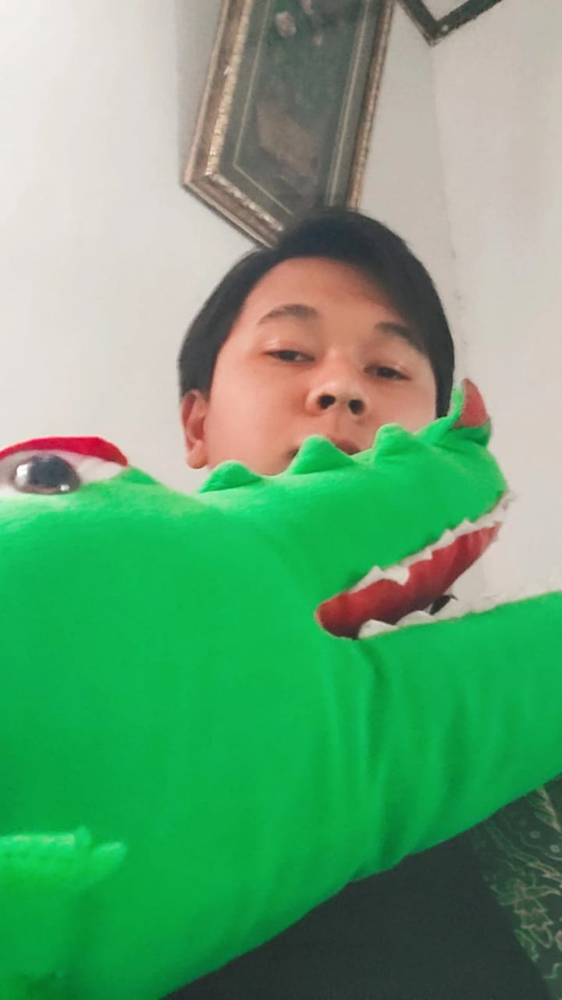
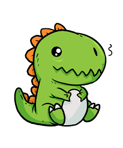
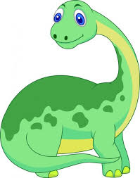
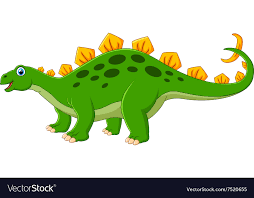
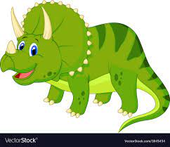

Saya Adib Jahfal Al Asyari, Nim 10121088, Kelas IF 3

Tyrannosaurus adalah sebuah genus dinosaurus teropoda yang tergolong ke dalam klad Coelurosauria. Spesies Tyrannosaurus rex (sering dijuluki T. rex atau T-Rex; "rex" berarti "raja" dalam bahasa Latin) adalah salah satu teropoda besar yang paling dikenal oleh khalayak luas. Tyrannosaurus hidup di sebuah benua yang dikenal dengan nama Laramidia, yang kini telah berubah menjadi Amerika Utara bagian barat. Tyrannosaurus jauh lebih tersebar daripada hewan-hewan Tyrannosauridae lainnya. Fosil-fosil Tyrannosaurus telah ditemukan di berbagai formasi geologi dari zaman Kapur Akhir sekitar 68 hingga 65 juta tahun yang lalu. Tyrannosaurus merupakan salah satu dinosaurus nonburung terakhir sebelum terjadinya peristiwa kepunahan Kapur–Paleogen.
Brontosaurus, (genus Brontosaurus), genus dinosaurus sauropoda herbivora besar yang hidup selama zaman Jura Akhir dan Kapur Awal (163,5 juta hingga 100,5 juta tahun yang lalu). Its fosil pertama kali ditemukan di Amerika Utara barat pada tahun 1874 dan pertama kali dijelaskan pada tahun 1879 oleh ahli paleontologi AmerikaOtniel Charles Marsh. Pada tahun 1903, bagaimanapun, genus Brontosaurus, yang berarti "kadal guntur" dalam bahasa Yunani, dimasukkan oleh genus yang dijelaskan sebelumnya.Apatosaurus.
Stegosaurus artinya "kadal beratap", karena sisik besar di punggungnya (bahasa Yunani stego = piring/atap + sauros = kadal) adalah sebuah genus dinosaurus herbivora besar dari Awal Jurassic di Amerika Utara.
Triceratops (dari bahasa Yunani, artinya "wajah bertanduk tiga") merupakan jenis dinosaurus bertanduk tiga yang berbadan besar. Panjangnya bisa mecapai 9 m, tingginya sekitar 3, 8 m dan berat 6, 5 ton. Panggilan pendeknya Tritop.
